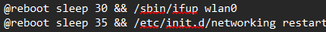
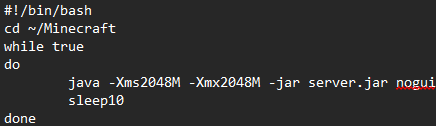
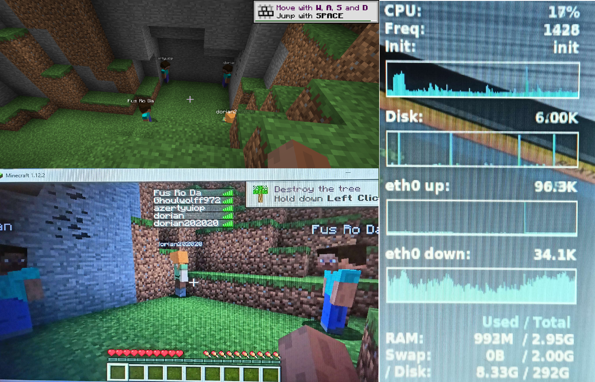

J'avais pour but d'installer un serveur Minecraft sur un PC ayant des caractéristiques faible pour tester ses performances
Ce serveur tourne sur une distribution Linux, mais le PC ne faisant pas tourner Debian 5.0.5, j'ai donc installer AntiX
Une fois installé et l'IP paramétrée, je n'avais toujours pas de réseau. Cela était dû au fait que la carte réseau était inactive au démarrage
j'ai ensuite édité le fichier crontab pour démarrer automatiquement la carte au démarrage du PC

Il m'a ensuite fallu télécharger une version Java compatible avec la version de Minecraft sur le site d'Oracle
et modifier le fichier .bashrc pour indiquer où est installé Java et l'ajouter au PATH
Le serveur est maintenant fonctionnel, mais il reste des configurations à faire
Premièrement, je vais autorisé les cracks. Pour cela, j'ouvre le fichier server.properties contenu dans le dossier du serveur
je vais y modifier la ligne "online-mode" pour la passer à false
Enfin, je vais faire ce script

Celui-ci lance le serveur Minecraft, et le relance automatiquement s'il s'arrête
Enfin, une fois le serveur lancé avec 5 hôte connectés dessus, le serveur tient bien la charge compte tenu de ses 2Go de RAM alloués et un Intel Core2 Duo de 2.0GHz et une distrib 32 bits

Retour